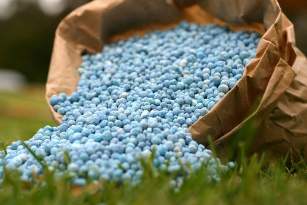
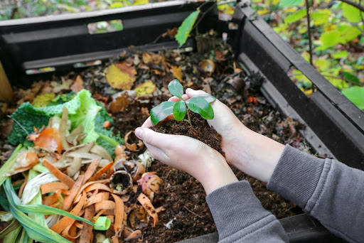
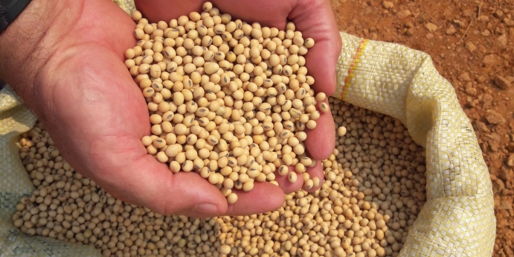

-
Fertilizantes
Os fertilizantes atuam no desenvolvimento e crescimento das plantas e vegetais, além de reporem os nutrientes do solo, ampliando a sua fertilidade e produtividade.
R$ 200,00 o kg
-
Adubo Orgânico
Tem desde resíduos vegetais, como folhas secas, grama, restos de alimentos, até esterco animal.
R$ 18 mil a tonelada
-
Semente de soja
as sementes de soja RR são as preferidas dos agricultores e já representam mais de 96% dos cultivares disponíveis no mercado.
varia de R $ 4,50 / kg para tecnologia RR a R $ 11,00 / kg para a tecnologia IPRO